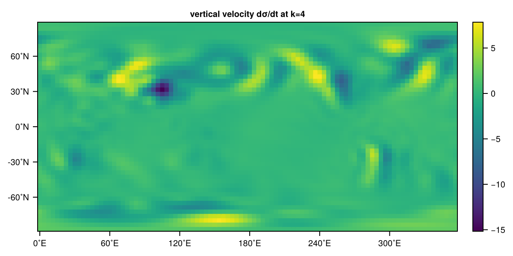

Customizing netCDF output
SpeedyWeather's NetCDF output is modularised for the output variables, meaning you can add relatively easy new variables to be outputted alongside the default variables in the netCDF file. We explain here how to define a new output variable largely following the logic of Extending SpeedyWeather.
New output variable
Say we want to output the Vertical velocity. In Sigma coordinates on every time step, one has to integrate the divergence vertically to know where the flow is not divergence-free, meaning that the horizontally converging or diverging motion is balanced by a vertical velocity. This leads to the variable $\partial \sigma / \partial t$, which is the equivalent of Vertical velocity in the Sigma coordinates. This variable is calculated and stored at every time step in
simulation.diagnostic_variables.dynamics.σ_tendSo how do we access it and add it the netCDF output?
First we define VerticalVelocityOutput as a new struct subtype of SpeedyWeather.AbstractOutputVariable we add the required fields name::String, unit::String, long_name::String and dims_xyzt::NTuple{4, Bool} (we skip the optional fields for missing_value or compression).
using SpeedyWeather
@kwdef struct VerticalVelocityOutput <: SpeedyWeather.AbstractOutputVariable
name::String = "w"
unit::String = "s^-1"
long_name::String = "vertical velocity dσ/dt"
dims_xyzt::NTuple{4, Bool} = (true, true, true, true)
endMain.VerticalVelocityOutputdims_xyzt defines the dimensions of the output variable. By default (using the @kwdef macro) we set the dimensions in dims_xyzt to 4D with (true, true, true, true) because the vertical velocity is a 3D variable that we want to output on every time step. So while dims_xyzt is a required field for every output variable you should only change it if you want to output something else than a 4D variable. For a time series of a surface variable for example, we would need to set it to (true, true, false, true) to reflect the missing z dimension or for a constant field like the orography to (true, true, false, false).
You can now add this variable to the NetCDFOutput as already described in Output variables
spectral_grid = SpectralGrid()
output = NetCDFOutput(spectral_grid)
add!(output, VerticalVelocityOutput())NetCDFOutput{FullGaussianField{Float32, 1}}
├ status: inactive/uninitialized
├ write restart file: true (if active)
├ interpolator: AnvilInterpolator{Float32, SpeedyWeather.RingGrids.GridGeometry{OctahedralGaussianGrid{SpeedyWeather.RingGrids.DummyArchitecture, Vector{UnitRange{Int64}}, Vector{Int64}}, Vector{Float64}, Vector{Int64}}, SpeedyWeather.RingGrids.AnvilLocator{Float32, Vector{Float32}, Vector{Int64}}}
├ path: output.nc
├ frequency: 21600 seconds
└┐ variables:
├ w: vertical velocity dσ/dt [s^-1]
├ v: meridional wind [m/s]
├ u: zonal wind [m/s]
└ vor: relative vorticity [s^-1]Note that here we skip the SpeedyWeather. prefix which would point to the SpeedyWeather scope but we have defined VerticalVelocityOutput in the global scope.
Define the output variable's path
To output a variable one also has to define its path where to find the AbstractField. For our example we already said above that this is simulation.diagnostic_variables.dynamics.σ_tend. For this we need to extend the path function. Using multiple dispatch we need to constrain the first argument's type to ::VerticalVelocityOutput but the second argument is just the simulation object.
SpeedyWeather.path(::VerticalVelocityOutput, simulation) =
simulation.diagnostic_variables.dynamics.σ_tendReading the new variable
Now let's try this in a primitive dry model
model = PrimitiveDryModel(spectral_grid; output)
model.output.variables[:w]Main.VerticalVelocityOutput <: SpeedyWeather.AbstractOutputVariable
├ name::String = w
├ unit::String = s^-1
├ long_name::String = vertical velocity dσ/dt
├ dims_xyzt::NTuple{4, Bool} = (true, true, true, true)By passing on output to the model constructor the output variables now contain w and we see it here as we have defined it earlier.
simulation = initialize!(model)
run!(simulation, period=Day(5), output=true)
# read netcdf data
using NCDatasets
path = joinpath(model.output.run_path, model.output.filename)
ds = NCDataset(path)
ds["w"]w (96 × 48 × 8 × 21)
Datatype: Union{Missing, Float32} (Float32)
Dimensions: lon × lat × layer × time
Attributes:
units = s^-1
long_name = vertical velocity dσ/dt
_FillValue = NaN
Fantastic, it's all there. We wrap this back into a FullGaussianGrid but ignore the mask (there are no masked values) in the netCDF file which causes a Union{Missing, Float32} element type by reading out the raw data with .var. And visualise the vertical velocity in sigma coordinates (remember this is actually $\partial \sigma / \partial t$) of the last time step (index end) stored on layer $k=4$ (counted from the top)
w = FullGaussianGrid(ds["w"].var[:, :, :, :], input_as=Matrix)
using CairoMakie
heatmap(w[:, 4, end], title="vertical velocity dσ/dt at k=4")
This is now the vertical velocity between layer $k=4$ and $k=5$. You can check that the vertical velocity on layer $k=8$ is actually zero (because that is the boundary condition at the surface) and so would be the velocity between $k=0$ and $k=1$ at the top of the atmosphere, which however is not explicitly stored. The vertical velocity is strongest on the wind and leeward side of mountains which is reassuring and all the analysis we want to do here for now.
Change units before output
In the definition of the output variable you can add a field called transform (not a spectral transform...) in order to automatically apply some element-wise post-processing. For example, you can use this to change the unit, e.g.
@kwdef struct MyVariableOutput <: SpeedyWeather.AbstractOutputVariable
name::String = "a"
unit::String = "mm"
long_name::String = "my variable"
dims_xyzt::NTuple{4, Bool} = (true, true, true, true)
transform::Function = (x) -> 1000x
endwould multiply every value by 1000 before writing to disk. If the variable inside SpeedyWeather has units of meters, this would convert to millimeters. You can also do transform::Function = (x) -> x - 273.15 to remove an offset (Kelvin to Celsius), or even transform::Function = (x) -> exp(x)/100 to convert from logarithm of Pascal to hecto Pascal (hPa). The transform function is applied element-wise to the array and is therefore implemented as an anonymous function of a single argument.
Advanced: Extend the output! function
Defining the path as outlined in Define the output variable's path will infer from the definition of the output variable how to write it into the netCDF file. As also outlined above this will automatically interpolate to the output grid and allows you to post-process with, e.g. a scale and offset, to change units from K to ˚C or m to mm.
If you want to have a lower level control about post-processing of a variable before it is written to disk you have to extend SpeedyWeather's output! function with the following function signature
function SpeedyWeather.output!(
output::NetCDFOutput,
variable::VerticalVelocityOutput,
simulation::SpeedyWeather.AbstractSimulation,
)
# INTERPOLATION
w = output.grid3D # scratch grid to interpolate into
(; σ_tend) = simulation.diagnostic_variables.dynamics # point to data in diagnostic variables
RingGrids.interpolate!(w, σ_tend , output.interpolator)
# (do any changes to w here)
# WRITE TO NETCDF
i = output.output_counter # output time step to write
output.netcdf_file[variable.name][:, :, :, i] = w
return nothing
endThe first argument has to be ::NetCDFOutput as this is the argument we write into (i.e. mutate). The second argument has to be ::VerticalVelocityOutput so that Julia's multiple dispatch calls this output! method for our new variable. Then the simulation allows us generally to read any data and use it to write into the netCDF file.
In most cases you will need to interpolate any gridded variables inside the model (which can be on a reduced grd) onto the output grid (which has to be a full grid, see Output grid). For that the NetCDFOutput has two scratch arrays grid3D and grid2D which are of type and size as defined by the output_Grid and nlat_half arguments when creating the NetCDFOutput. So the three lines for interpolation are essentially those in which your definition of a new output variable is linked with where to find that variable in diagnostic_variables. You can, in principle, also do any kind of computation here, for example adding two variables, normalising data and so on. In the end it has to be on the output_Grid hence you probably do not want to skip the interpolation step but you are generally allowed to do much more here before or after the interpolation.
The last two lines are then just about actually writing to netcdf. For any variable that is written on every output time step you can use the output counter i to point to the correct index i in the netcdf file as shown here. For 2D variables (horizontal+time) the indexing would be [:, :, i]. 2D variables without time you only want to write once (because they do not change) the indexing would change to [:, :] and you then probably want to add a line at the top like output.output_counter > 1 || return nothing to escape immediately after the first output time step. But you could also check for a specific condition (e.g. a new temperature record in a given location) and only then write to netcdf. Just some ideas how to customize this even further.